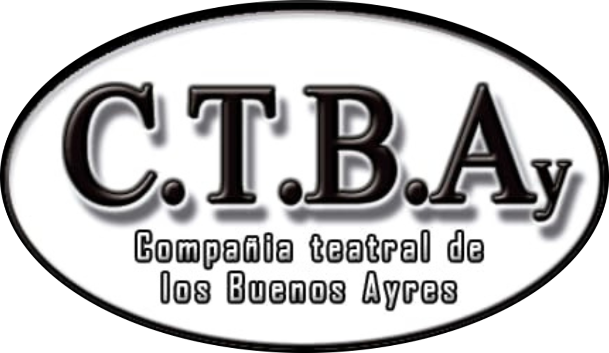
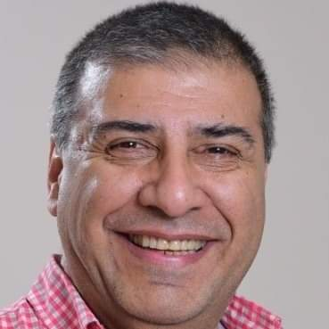

Quiénes somos
SOBRE CTBAy

CTBAy (Compañía Teatral de los Buenos Ayres) tiene su sede en pleno
centro de la Ciudad de Buenos Aires, y nace en el año 2017 de la
mano de Marcelo Marchese, su actual Director.
Dentro del concepto de "Producciones Propias", Marcelo Marchese se
encarga de la autoría de la mayor parte de los textos de las obras
que se representan, así como también de la dirección de los mismas,
participando como actor en muchos de ellos. También se
responsabiliza de la gestión, producción y distribución de ellas.
Tiene su base de operaciones en el Teatro Colonial de San Telmo, en
la Ciudad de Buenos Aires.
Actualmente se ha incorporado al equipo Magdalena Rodrigo como
asistente de Dirección y de Producción, aportando todo su
conocimiento y experiencia.
SOBRE MARCELO MARCHESE

Marcelo Marchese, además de Contador Publico Nacional en ejercicio,
es Actor, Director, Escritor y Productor teatral.
En la actividad artística se ha formado con Zaida Rico, Javo Rocha,
Carlos Evaristo, y Santiago Doria, entre otros.
Su carrera como actor se inicio en el año 2012, formando parte de
"Soledad desde el dia que te fuiste" en el teatro Becket del Barrio
de Almagro en Buenos Aires.
A partir de allí, la pasión por el teatro lo llevo a participar en
numerosos eventos, festivales y a integrar elenco en obras tales
como "El caso cien", "Sana sana", "Re pulsiones", "Versicolor",
"Mente animal", "Soltero, casado, viudo y divorciado", "Misión
suegros imposibles", "El conventillo de la paloma", "Alfonsina y el
hombre oscuro", "Seamos libres", "Buscando la libertad", "Un gran
hombre" y "Don Raúl", "Sentimientos Compartidos", "Candidatos para
lelos", entre otras.
Ha sido parte del elenco estable del Teatro Colonial de San Telmo y
desde el año 2018 es director de CTBAy (Compañía teatral de los
Buenos Ayres).
En el año 2017 se produce un salto de calidad en su vida artística,
y esa misma pasión lo llevo a escribir sus propias obras de teatro.
Hasta el momento tiene cuatro obras escritas: Las ya estrenadas y
con varias temporadas y giras realizadas como "Sentimientos
Compartidos" y "Candidatos para lelos", y las que pronto se
estrenaran como "Casamiento a la Argentina" y "Cuanto vale tu
amor".
Asimismo, desde fines de ese año 2017 es director de CTBAy (Compañía
teatral de los Buenos Ayres), con la cual lleva a cabo los proyectos
teatrales desde ese año.
En su vida personal, Marcelo tiene 60 años. Ariano del 11 de Abril.
Divorciado. Padre de Nahuel, la luz de sus ojos, a quien adopto
junto a su ex esposa cuando era un bebe de cuatro meses y medio y
por su estado de salud solo le diagnosticaban un año de vida, ya que
padece de un síndrome genético y retraso madurativo severo.
En la actualidad, esta trabajando sobre dos proyectos teatrales: Una
nueva comedia de enredos y una comedia dramática sobre discapacidad
y adopción (Basada en su historia personal junto a su hijo Nahuel).